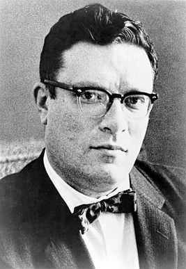

Айзек Азимов

Айзек Азимов (2 января 1920 года - 6 апреля 1992 года) - американский писатель-фантаст, популяризатор науки, биохимик. Сформулировал три закона робототехники.
Айзек Азимов (имя при рождении Исаак Юдович Озимов) — американский писатель-фантаст, популяризатор науки, по профессии биохимик. Автор около 500 книг, в основном художественных (прежде всего в жанре научной фантастики, но также и в других жанрах: фэнтези, детектив, юмор) и научно-популярных (в самых разных областях — от астрономии и генетики до истории и литературоведения). Многократный лауреат премий Хьюго и Небьюла. Некоторые термины из его произведений — robotics (роботехника, роботика), positronic (позитронный), psychohistory (психоистория, наука о поведении больших групп людей) — прочно вошли в английский и другие языки. В англо-американской литературной традиции Азимова вместе с Артуром Кларком и Робертом Хайнлайном относят к «Большой тройке» писателей-фантастов. Азимов родился (по документам) 2 января 1920 года в местечке Петровичи Климовичского уезда Гомельской губернии, РСФСР (с 1929 года — Шумячский район Смоленской области) в еврейской семье. Его родители, Анна-Рахиль Исааковна Берман (Anna Rachel Berman-Asimov, 1895—1973) и Юда Аронович Азимов (Judah Asimov, 1896—1969), были мельниками по профессии. Назвали его в честь покойного деда по матери, Исаака Бермана (1850—1901). Вопреки поздним утверждениям Айзека Азимова, будто первоначальной семейной фамилией была «Озимов», все оставшиеся в СССР родственники носят фамилию «Азимов». Как сам Азимов указывает в автобиографиях («In Memory Yet Green», «It’s Been A Good Life»), его родным и единственным языком в детстве был идиш; по-русски с ним в семье не говорили. Из художественной же литературы в ранние годы он рос в основном на рассказах Шолом-Алейхема. В 1923 родители увезли его в США («в чемодане», как он сам выражался), где поселились в Бруклине и через несколько лет открыли кондитерский магазин. В 5 лет Айзек Азимов пошёл в школу. (Ему полагалось пойти в школу в 6 лет, но мать исправила его день рождения на 7 сентября 1919 года, чтобы отдать его в школу на год раньше.) Писать Азимов начал в 11 лет. Он начал писать книгу о приключениях мальчиков, живущих в маленьком городке, но потом забросил книгу. Но при этом произошёл интересный случай. Написав 2 главы, Айзек пересказал их своему другу. Тот потребовал продолжение. Когда Айзек объяснил, что это пока всё, что он написал, его друг попросил дать почитать книгу, где Айзек прочёл эту историю. С того момента Айзек понял, что он обладает писательским даром, и стал серьёзно относиться к своей литературной деятельности. После окончания десятого класса в 1935 году 15-летний Азимов поступил в Seth Low Junior College, но через год этот колледж закрылся. Азимов поступил на химический факультет Колумбийского университета в Нью-Йорке, где получил в 1939 году степень бакалавра (B. S.), а в 1941 году — магистра (M. Sc.) по химии и поступил в аспирантуру. Впервые Азимов опубликовался в 1939 году. Это был рассказ «В плену у Весты» (англ. Marooned Off Vesta), принятый к публикации в октябре 1938 года журналом Amazing Stories и опубликованный 10 января 1939. Однако в 1942 году он уехал в Филадельфию, чтобы работать химиком на Филадельфийской судоверфи для армии. Вместе с ним там же работал и другой писатель-фантаст Роберт Хайнлайн. В 1941 году был опубликован рассказ «Приход ночи» o планете, вращающейся в системе шести звёзд, где ночь наступает раз в 2049 лет. Рассказ получил огромную известность. В 1968 году Американская ассоциация писателей-фантастов объявила «Приход ночи» лучшим из когда-либо написанных фантастических рассказов. Рассказ более 20 раз попадал в антологии, дважды был экранизирован, и сам Азимов впоследствии назвал его «водоразделом в моей профессиональной карьере». В феврале 1942 года, в Валентинов день, Азимов встретился на «свидании вслепую» с Гертруд Блюгерман (англ. Gerthrude Blugerman). 26 июля они поженились. От этого брака родился сын Дэйвид (англ. David) (1951) и дочь Робин Джоэн (англ. Robyn Joan) (1955). С октября 1945 года по июль 1946 Азимов служил в армии. Затем вернулся в Нью-Йорк и продолжил образование. В 1948 году закончил аспирантуру, получил степень PhD (доктора философии), и поступил в постдокторат как биохимик. В 1949 году он устроился преподавателем на медицинский факультет Бостонского Университета, где в декабре 1951 года стал ассистентом (англ. assistant professor), а в 1955 году — доцентом (англ. associate professor). В 1958 году университет перестал ему платить зарплату, но формально оставил в прежней должности. К этому моменту доходы Азимова как писателя уже превышали его университетскую зарплату. В 1979 году ему было присвоено звание профессора (англ. full professor). В 1970 году Азимов расстался с женой и почти немедленно стал жить с Джэнет Опал Джеппсон (англ. Janet Opal Jeppson), с которой познакомился на банкете 1 мая 1959 года. (До этого они встречались в 1956 году, когда он дал ей автограф. Азимов вообще не запомнил ту встречу, а Джеппсон сочла его неприятным человеком.) Развод вступил в силу 16 ноября 1973 года, а 30 ноября Азимов и Джеппсон поженились. От этого брака не было детей. Умер 6 апреля 1992 года от сердечной и почечной недостаточности на фоне ВИЧ инфекции (приведшей к СПИДу), которой заразился при операции на сердце в 1983.